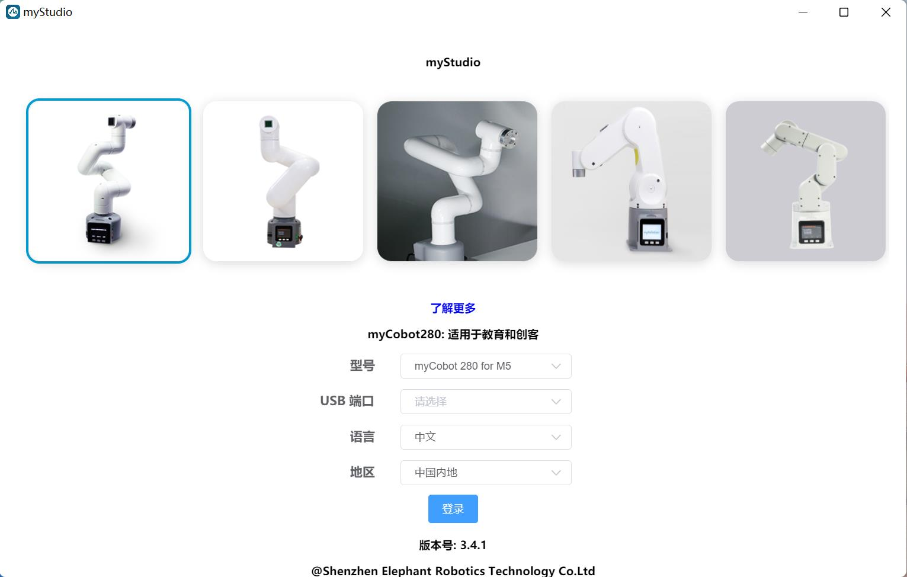

myStudio

1 myStudio设计初衷
myStudio是一个一站式的myRobot/myCobot等机器人的使用平台。
方便用户根据自己的使用场景，选择不同的固件并进行下载，同时学习相关的教材，在线浏览教程视频。
2 myStudio最新版本与支持平台
最新版本：V3.5.8
适用于：Windows、Mac、Linux
3 myStudio功能
- 烧录、更新固件
- 提供机器人使用教程，如用户手册、视频教程、Q&A等
- 维护和维修方面的信息
4 myStudio适用设备
- myCobot 280
- myCobot 280 M5
- myCobot 280 PI
- myCobot 280 Jetson Nano
- myCobot 280 for Arduino
- myCobot 320
- myCobot 320 M5
- myCobot 320 PI
- myPalletizer 260
- myPalletizer 260 M5
- myPalletizer 260 PI
- mechArm 270
- mechArm 270 M5
- mechArm 270 Pi
- myCobot Pro 600
- myBuddy 280
5 固件版本推荐
不同型号机械臂所需烧录的固件不同，以下是不同型号机械臂推荐烧录的固件版本。
myCobot 280系列
myCobot 280系列共4个版本：M5版本、PI版本、ardunio版本以及jetsonnano版本。不同版本核心型号不同，所需烧录的固件及其版本也不同。
| 机械臂版本号 | 核心 | 所需烧录固件 | 推荐固件及其版本 |
| M5版本 | M5Stack-Basic | miniRobot固件 | 推荐烧录v2.1版本，可以使用拖动示教、wifi、蓝牙等功能 |
| Atom | atomMain固件 | 产品序列号为ER28001202200415及之前，或者产品无序列号，推荐烧录v4.1版本；序列号为ER28001202200416及之后，推荐烧录v5.1版本 | |
| PI版本 | RaspberryPI 4B | ubuntu固件 | 推荐烧录V18.04.版本 |
| Atom | atomMain固件 | 产品序列号为ER28001202200415及之前，或者产品无序列号，推荐烧录v4.1版本；序列号为ER28001202200416及之后，推荐烧录v5.1版本 | |
| Arduino版本 | mega2560 | transponder固件 | 推荐烧录v1.0版本 | mkrwifi1010 | transponder固件 | 推荐烧录v1.0版本 |
| Atom | atomMain固件 | 产品序列号为ER28001202200415及之前，或者产品无序列号，推荐烧录v4.1版本；序列号为ER28001202200416及之后，推荐烧录v5.1版本 | |
| Jetson nano版本 | JestonNano | ubuntu固件 | 推荐烧录V18.04.版本 |
| Atom | atomMain固件 | 产品序列号为ER28001202200415及之前，或者产品无序列号，推荐烧录v4.1版本；序列号为ER28001202200416及之后，推荐烧录v5.1版本 |
6.更新与烧录 Atom 固件
第一步：与PC连接。用 USB 连接末端的Atom。

第二步：在Board一栏可以选择ATOM,侧边栏Basic就会出现 Atom 的固件。Atom 的固件就只有一个，点击烧入即可（下图以myCobot 280为例）。